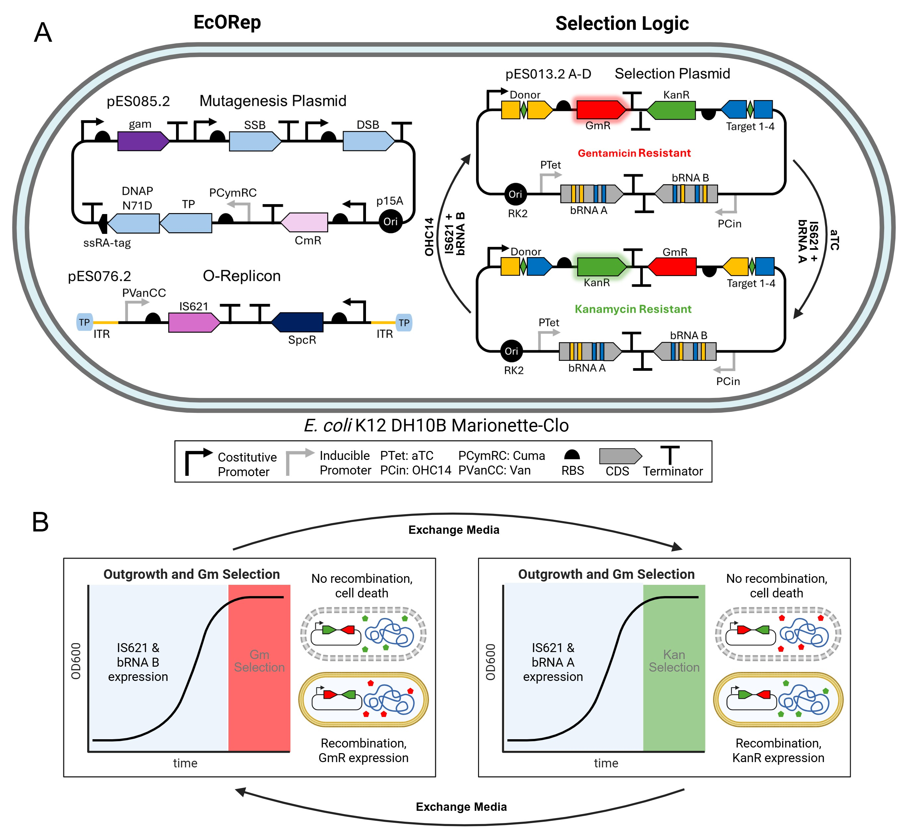
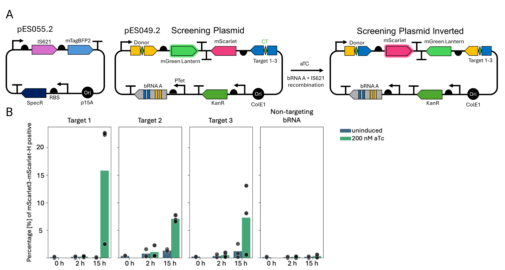
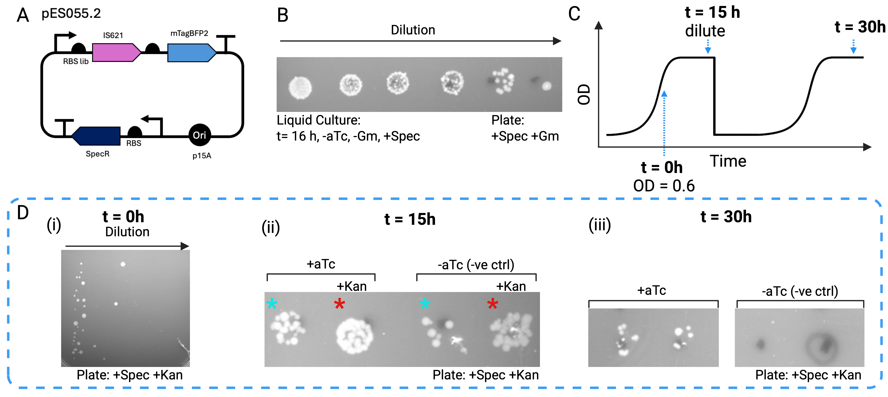
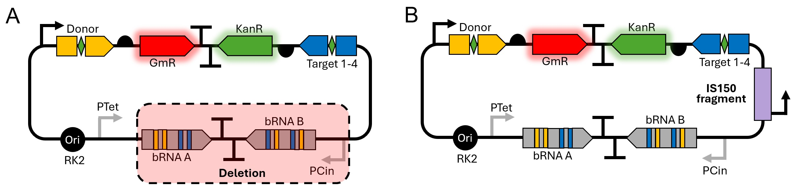
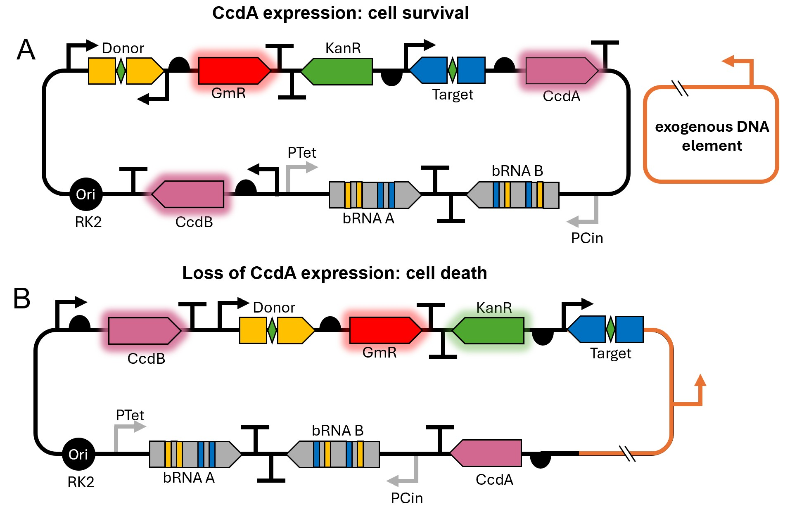

Plasmid-based selection system for evolving bridge recombinases
Evolutionary strategy and plasmid design
We designed an evolution logic that allows for the selection of improved bridge recombinases in E. coli (Figure 1). All components necessary for selection are contained on a single ”selection plasmid” while the bridge recombinase is located on a different plasmid or orthogonal replicon. This system is adaptable to several continuous DE methods such as MutaT7 1, T7-ORACLE2 and E. coli orthogonal replication system (EcORep) 3. Selection of variants with higher activity occurs as follows: the selection plasmid carries two bRNAs under the control of inducible promoters (Figure 1 A) and a cassette encoding two antibiotic resistance genes facing in opposite directions. This cassette can be inverted via bRNA-mediated recombination. Only one of the resistance genes is expressed in each of the orientations of the cassette. Therefore, it is possible to select for successful inversion of the cassette using antibiotics (Figure 1 B). This allows for the enrichment of recombinase variants with increased activity over time. Expression of bRNA A can be induced by the addition of anhydrotetracycline (aTc) and results in inversion of the cassette from its initial orientation (gentamycin (Gm) →kanamycin (Kan)). Expression of bRNA B is induced using N-(3-Hydroxytetradecanoyl)-DL-homoserine lactone (OHC14) and mediates the reverse process (Kan →Gm)

EcORep is a continuous DE method that allows DE of large DNA segments in E. coli. EcORep uses genes from PRD1 phage to replicate a linear orthogonal replicon (O-Replicon) with an increased mutation rate3. We attempted to adapt EcORep and use it for the evolution of IS621. IS621 is encoded on the O-replicon, which allows the generation of many variants in continuous culture. Expression of IS621 is controlled by the inducible PVanCC promoter. Cells that carry more active variants of IS621 are more likely to recombine during the time interval between bRNA induction and antibiotic (AB) addition. This results in enrichment of bacteria carrying more active recombinase variants. Selection takes place in the Marionette-Clo strain 4 which contains the regulators of all the inducible promoters used here.
Target Sequence Selection
As our proof-of-concept is to optimize bridge recombinase activity for AATD treatment, we identified three candidate target sequences (target 1-3) within the SERPINA1 locus. The targets were selected following these criteria:
(i) 14 bp-long sequences with a CT core in intron 1 as nearly all disease causing mutations occur downstream of exon 1 5
(ii) excluded those with either direct match or 1 mismatch to any sequence in the E. coli genome to reduce off targets
(iii) high similarity to the IS621 wild-type target sequence 6
To assess the baseline recombination efficiency between the wild-type donor and the selected target sequences, we co-expressed two plasmids in the E. coli Marionette-Clo strain: one encoding the IS621 recombinase and another, the ”screening plasmid”, carrying the respective bRNA under the control of the PTet promoter along with two fluorescent reporter genes oriented in opposite directions (Figure 2A). The screening plasmid expresses mGreenLantern under the control of a constitutively active promoter; after inversion the two fluorescent reporter gene cassettes are flipped and mScarlet3 is placed downstream the promoter and expressed. The recombination efficiency for each target site is measured by flow cytometry and calculated as the percentage of mScarlet3-positive cells. Inversion is induced by addition of aTc which triggers bRNA A expression.
After 15 h of induction targets 1-3 showed 6 % to 16 % of mScarlet3-positive cells, whereas, the non-targeted target-sequence showed < 1 % positive cells (Figure 2B), confirming target-specific inversion events. Similarly, we observed <1 % positive cells in the uninduced control in all conditions, except target 2 and 3, where we observed 2% positive cells at the 15 h time point. This is indicative of effective promoter repression in the absence of the inducer. Furthermore, we were only able to observe a change in fluorescent protein expression after 15 hours of induction, as there were <1 % mScarlet positive cells 2 hours after induction across all conditions. Lastly, flipping events were confirmed by Oxford Nanopore sequencing. Target 1 showed the highest activity and was selected as the primary target sequence from this point forward.

Validation of the selection logic
To identify optimal induction and selection conditions for detecting IS621-mediated inversions, we screened nearly 100 conditions, with the most promising ones discussed below. We co-transformed the selection plasmid (pES013.2A) with a plasmid constitutively expressing IS621 (pES055.2). In this simplified model system, inversion is induced by the addition of aTc leading to the expression of the bRNA A. We first showed that the bacterial population maintains the selection plasmid in the absence of antibiotic selection by Gm or Kan in liquid culture over the course of 15 h (Figure 3 A). Based on this, we devised the induction scheme showed in Figure 3 C.
The bacterial population was induced in late exponential phase (OD600O=0.6). We tested two different conditions:
-
No antibiotic after induction
-
Kanamycin added after aTc induction to select for succesful inversions of the antibiotic cassette.
For each condition, controls in which bRNA expression was not induced were included. Bacteria were grown for 15 hours after induction and then, those grown in absence of Kan were diluted into fresh media and grown for an additional 15 hours. This allowed for a longer induction period while minimizing cell death. Notably, some bacterial colonies were already able to grow on Kan plates before induction (t=0), indicating a low level of pre-existing resistance in the native population (Figure 3 D (i)).

Following this assay monoclonal cultures were grown and their DNA sequenced. While the sequencing data confirmed inversion of the AB cassette, it also detected escape mutations, in some of the colonies grown in the presence of Kan. Two escape mutations were identified: large deletions as well as insertions of genomic host DNA. Upon deletion KanR gene was placed under the control of the pTet promoter, which otherwise controls bRNA A expression, enabling cell surivival without inversion of the cassette (Figure 4 A). The second escape mutation we observed was a partial insertion of the transposable element IS150 from IS3 family 7. This fragment contains a promoter which leads to the expression of KanR and cell survival (Figure 4 B).

These escape mutations represent a limit for the applicability of our system, as they allow cells to grow without the need for IS621-catalysed recombination. To counteract this, we have devised an experimental strategy which aims to reduce the number of possible escape mutations. Escape mutants as shown if Figure 4 appear when a promoter is re-localized and the simultaneous transcription of GmR and KanR are enabled. This renders inversion of the AB cassette unnecessary. The incorporation of CcdA/CcdB toxin/antitoxin system into the selection plasmid as shown in Figure 5 should greatly reduce the number of escape mutants. The toxin CcdB inhibits DNA gyrase, an essential enzyme that can introduce negative supercoils in the DNA during replication. Loss of gyrase activity results in cell death. The antitoxin CcdA binds CcdB and neutralizes the toxic effects. 8 In our proposed system, both CcdA and CcdB are constitutively expressed. CcdA is located downstream of the AB cassette. Transcription of CcdA is initiated form one of two promoters within the AB cassette, depending on the orientation of the cassette. Insertion, deletion or off target recombination events that can lead to the formation of escape mutants in the previous system (pES013.2). In the ajdusted system, such events should result in the loss of CcdA transcription, which leads to cell death.

As a next step we aim to demonstrate inversion in the reverse direction (Kan --> Gm) following induction of the bRNA. Successful implementation of this step would enable continuous directed evolution. This could involve growing the bacteria in a continuous culture where the media is exchanged slowly overtime to contain different concentrations of the inducers and antibiotics used for selection. Alternately, non-continuous cultures can be used where the bacteria are subjected to iterative cycles of induction and selection.
Directed Evolution of IS621 using EcORep
We attempted to apply our evolutionary logic in combination with EcoRep. This system allows for an orthog- onally increased mutation rate on the target gene in vivo 3. Since we were unable to obtain the EcORep strain, we set out to engineer an adapted version of EcORep. Our goal was to create a system that carries all the genes necessary for stable replication of the O-Replicon on a single plasmid. The original system works as follows: A synthetic replication operon containing the PRD1 genes TP (pVIII), DNAP (pI), SSB (pXII) and DSB (pXIX) is integrated in the E. coli strain DH10B. The operon is under the control of the IPTG-responsive Ptac promoter. To establish the O-Replicon, the strain is first transformed with an additional ”helper plasmid” (pFR160GB) expressing SSB, DSB and Gam. The O-Replicon is then electroporated into this strain. The helper plasmid can then be cured from the strain. To expand and mutagenize the O-Replicon, the genomically integrated casette is repressed using a plasmid (pRT19) carrying dCas9 and gRNA targeted to the IPTG promoter. An additional plasmid expressing the PRD1 genes including a mutagenic version of DNAP (N71D), is expressed from another plasmid (pRT4-2). In our simplified design (pES084.2, 17), all genes necessary necessary for replication of the O-Replicon are carried on a low copy plasmid with the p15A ori. The TP and mutagenic DNAP-N71D are under the control of the PCymRC promoter optimized by Meyer et al.4 This inducible promoter shows a great dynamic range and low leakiness. Expression in the induced state is 870 fold higher. Furthermore, we tried to optimize the expression levels of SSB, DSB, and Gam by creating a promoter and RBS library for each of the genes. This plasmid-borne system can easily be transformed. The reduced number of genetic components should also decrease the metabolic burden of carrying the system. Unfortunately, we have not been able to test our selection strategy with the EcoRep system within the time frame of our project. However, the selection logic is not directly linked to the method of gene diversification. Consequently, the system should work in combination with EcORep given that both systems have been shown to work independantly. The selection could also be employed in combination with any other DE method as long as selection takes place in vivo. Furthermore, the strategy requires only simple laboratory equipment.
References
-
A. A. Mengiste, J. L. McDonald, M. T. Nguyen Tran, et al., “MutaT7GDE: A Single Chimera for the Targeted, Balanced, Efficient, and Processive Installation of All Possible Transition Mutations In Vivo,” ACS Synthetic Biology, vol. 13, no. 9, pp. 2693–2701, Sep. 2024, Publisher: American Chemical Society. doi: 10.1021/acssynbio.4c00316. (visited on 04/30/2025). ↩
-
C. S. Diercks, P. Sondermann, C. Rong, et al., “An orthogonal T7 replisome for continuous hypermutation and accelerated evolution in E. coli,” Science, vol. 389, no. 6760, pp. 618–622, Aug. 2025, Publisher: American Association for the Advancement of Science. doi: 10.1126/science.adp9583. (visited on 09/19/2025). ↩
-
R. Tian, F. B. H. Rehm, D. Czernecki, et al., “Establishing a synthetic orthogonal replication system enables accelerated evolution in E. coli,” Science, vol. 383, no. 6681, pp. 421–426, Jan. 2024, Publisher: American Association for the Advancement of Science. doi: 10.1126/science.adk1281. (visited on 05/21/2025). ↩↩↩
-
A. J. Meyer, T. H. Segall-Shapiro, E. Glassey, J. Zhang, and C. A. Voigt, “Escherichia coli “Marionette” strains with 12 highly optimized small-molecule sensors,” en, Nature Chemical Biology, vol. 15, no. 2, pp. 196–204, Feb. 2019, Publisher: Nature Publishing Group, issn: 1552-4469. doi: 10.1038/s41589- 018-0168-3. (visited on 04/12/2025). ↩↩
-
“SERPINA1: Chr14 - Genome Data Viewer - NCBI.” Accessed: Oct. 08, 2025. Available: https://www.ncbi.nlm.nih.gov/gdv/browser/gene/?id=5265 ↩
-
M. G. Durrant, N. T. Perry, J. J. Pai, et al., “Bridge RNAs direct programmable recombination of target and donor DNA,” Nature, vol. 630, no. 8018, pp. 984–993, Jun. 2024, Epub 2024 Jun 26. doi: 10.1038/ s41586-024-07552-4. ↩
-
M. Haas and B. Rak, “Escherichia coli insertion sequence is150: Transposition via circular and linear intermediates,” Journal of Bacteriology, vol. 184, no. 21, pp. 5833–5841, 2002. doi: 10.1128/JB.184. 21.5833-5841.2002 ↩
-
N. D. Jonge, A. Garcia-Pino, L. Buts, et al., “Rejuvenation of CcdB-Poisoned Gyrase by an Intrinsically Disordered Protein Domain,” English, Molecular Cell, vol. 35, no. 2, pp. 154–163, Jul. 2009, Publisher: Elsevier, issn: 1097-2765. doi: 10.1016/j.molcel.2009.05.025. (visited on 10/08/2025). ↩